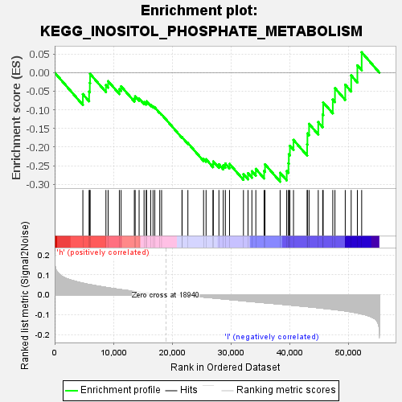
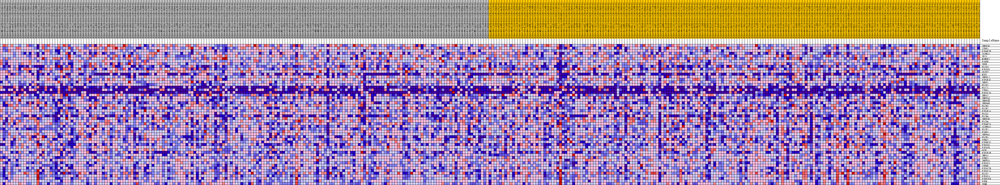
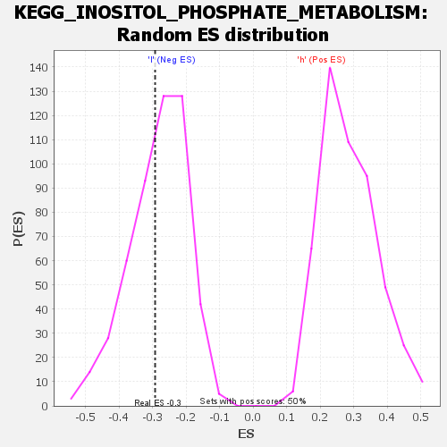

| | | Dataset | VCAN.VCAN.cls#h_versus_l.VCAN.cls#h_versus_l_repos |
| Phenotype | VCAN.cls#h_versus_l_repos |
| Upregulated in class | l |
| GeneSet | KEGG_INOSITOL_PHOSPHATE_METABOLISM |
| Enrichment Score (ES) | -0.29288262 |
| Normalized Enrichment Score (NES) | -1.0341212 |
| Nominal p-value | 0.40319362 |
| FDR q-value | 1.0 |
| FWER p-Value | 0.999 |
Table: GSEA Results Summary

Fig 1: Enrichment plot: KEGG_INOSITOL_PHOSPHATE_METABOLISM
Profile of the Running ES Score & Positions of GeneSet Members on the Rank Ordered List
| SYMBOL | TITLE | RANK IN GENE LIST | RANK METRIC SCORE | RUNNING ES | CORE ENRICHMENT | | 1 | INPP5K | na | 4800 | 0.058 | -0.0579 | No |
| 2 | ITPK1 | na | 5860 | 0.051 | -0.0513 | No |
| 3 | PIP4K2B | na | 5982 | 0.051 | -0.0280 | No |
| 4 | ISYNA1 | na | 6030 | 0.050 | -0.0035 | No |
| 5 | TPI1 | na | 8728 | 0.037 | -0.0339 | No |
| 6 | MINPP1 | na | 9098 | 0.035 | -0.0230 | No |
| 7 | PI4KB | na | 11011 | 0.027 | -0.0443 | No |
| 8 | IPPK | na | 11310 | 0.025 | -0.0369 | No |
| 9 | PLCD3 | na | 13562 | 0.017 | -0.0693 | No |
| 10 | PIK3CD | na | 13702 | 0.016 | -0.0638 | No |
| 11 | CDIPT | na | 14374 | 0.014 | -0.0692 | No |
| 12 | MIOX | na | 15217 | 0.011 | -0.0791 | No |
| 13 | INPPL1 | na | 15592 | 0.009 | -0.0811 | No |
| 14 | PIP5K1C | na | 15637 | 0.009 | -0.0772 | No |
| 15 | INPP1 | na | 16340 | 0.007 | -0.0864 | No |
| 16 | PLCD1 | na | 16748 | 0.006 | -0.0908 | No |
| 17 | PLCZ1 | na | 17046 | 0.005 | -0.0937 | No |
| 18 | ITPKA | na | 17888 | 0.003 | -0.1076 | No |
| 19 | PIK3C2G | na | 18201 | 0.002 | -0.1124 | No |
| 20 | IMPA2 | na | 21674 | -0.002 | -0.1743 | No |
| 21 | INPP5J | na | 21694 | -0.002 | -0.1737 | No |
| 22 | INPP5B | na | 22678 | -0.005 | -0.1892 | No |
| 23 | INPP4B | na | 25346 | -0.012 | -0.2315 | No |
| 24 | PLCB3 | na | 25772 | -0.013 | -0.2327 | No |
| 25 | PLCB2 | na | 26949 | -0.016 | -0.2458 | No |
| 26 | PIP5K1A | na | 27000 | -0.016 | -0.2385 | No |
| 27 | PLCG1 | na | 27958 | -0.019 | -0.2463 | No |
| 28 | PLCB4 | na | 28699 | -0.021 | -0.2491 | No |
| 29 | INPP5E | na | 29056 | -0.022 | -0.2444 | No |
| 30 | PLCD4 | na | 29764 | -0.024 | -0.2451 | No |
| 31 | PIP4K2A | na | 32134 | -0.031 | -0.2726 | Yes |
| 32 | ALDH6A1 | na | 32912 | -0.033 | -0.2702 | Yes |
| 33 | PLCE1 | na | 33571 | -0.035 | -0.2648 | Yes |
| 34 | PI4KA | na | 34243 | -0.036 | -0.2586 | Yes |
| 35 | INPP4A | na | 35652 | -0.040 | -0.2639 | Yes |
| 36 | PLCB1 | na | 35807 | -0.041 | -0.2463 | Yes |
| 37 | SYNJ2 | na | 38379 | -0.047 | -0.2691 | Yes |
| 38 | PIP4K2C | na | 39499 | -0.050 | -0.2641 | Yes |
| 39 | PIK3CG | na | 39795 | -0.051 | -0.2438 | Yes |
| 40 | PIK3CB | na | 39858 | -0.051 | -0.2192 | Yes |
| 41 | OCRL | na | 40043 | -0.052 | -0.1965 | Yes |
| 42 | PIP5K1B | na | 40655 | -0.053 | -0.1807 | Yes |
| 43 | IMPA1 | na | 42978 | -0.060 | -0.1927 | Yes |
| 44 | SYNJ1 | na | 43024 | -0.060 | -0.1633 | Yes |
| 45 | INPP5A | na | 43305 | -0.061 | -0.1378 | Yes |
| 46 | PIK3C3 | na | 44870 | -0.065 | -0.1331 | Yes |
| 47 | ITPKB | na | 45622 | -0.068 | -0.1126 | Yes |
| 48 | PIK3C2B | na | 45708 | -0.068 | -0.0799 | Yes |
| 49 | PIK3C2A | na | 47343 | -0.073 | -0.0726 | Yes |
| 50 | PLCG2 | na | 47713 | -0.075 | -0.0417 | Yes |
| 51 | PIK3CA | na | 49464 | -0.081 | -0.0325 | Yes |
| 52 | PIKFYVE | na | 50474 | -0.086 | -0.0076 | Yes |
| 53 | PTEN | na | 51527 | -0.092 | 0.0194 | Yes |
| 54 | IPMK | na | 52261 | -0.096 | 0.0544 | Yes |
Table: GSEA details [plain text format]

Fig 2: KEGG_INOSITOL_PHOSPHATE_METABOLISM
Blue-Pink O' Gram in the Space of the Analyzed GeneSet

Fig 3: KEGG_INOSITOL_PHOSPHATE_METABOLISM: Random ES distribution
Gene set null distribution of ES for KEGG_INOSITOL_PHOSPHATE_METABOLISM